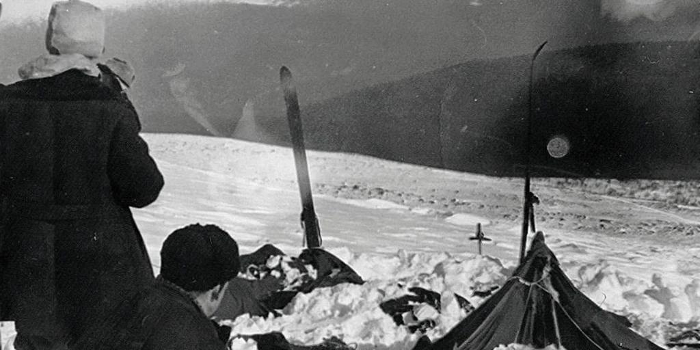

En 1959,nueve excursionistas murieron en extrañas circustancias en los Montes Urales de Rusia.
Sus cuerpos fueron encontrados con señales de violencia inexplicable, como fracturas internas sin heridas externas y altos niveles de radiación.Los detalles de la tragedia nunca se explicaron por completo, lo que generó teorías sobre extraterrestres, criaturas misteriosas o experimentos militares.
Durante una ruta en un difícil paso de montaña de los montes Urales, en la Unión Soviética, entre el 1 y 2 de febrero de 1959. El grupo, con experiencia en esquí de fondo, estaba formado por estudiantes de la Universidad Estatal Técnica de los Urales. Había establecido un campamento en las laderas de Jólat Siajl, en un área que será nombrada después en honor al líder del grupo, Igor Diátlov. Sus cuerpos fueron hallados semanas después por un equipo de rescate del Ejército Soviético al no dar señales de vida. Se encontró el campamento vacío y la tienda destrozada. En un pequeño bosque cercano se encontraron los restos de una fogata y dos cuerpos al lado, vestidos solo con ropa interior a pesar de las temperaturas bajo cero, después se encontraron tres cuerpos más,los otros cuatro fueron hallados dos meses más tarde en otra zona boscosa.
 Pincha aquí para ir a la pagina anterior